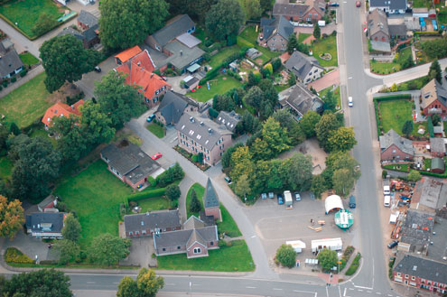
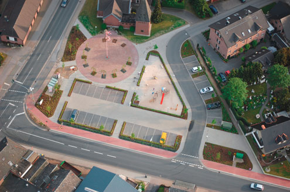

Wissenswertes
Geschichte
Der Name Lüllingen ist schon sehr alt und taucht schon 1418 in den Geschichtsbüchern auf. Bereits 1510 wird die Kapelle "tho lueylyeng" erwähnt. Die Schreibweise war damals lueylyeng, lulyng und lullingh. Pastor Gaien schrieb 1636 schon Lülling. Später hängte man die Silbe "en" an: Lüllingen. Im Jahre 1636 und 1714 werden bereits Schulmeister in Lüllingen genannt. Auch sollen Eremiten an der Lüllinger Schule tätig gewesen sein. Von ihnen jedenfalls, die das Kapellchen am Jülicherweg schon betreuten, erhielt Lüllingen den Namen "An de Kluus", der heute nach wie vor volkstümlich ist. Im Jahre 1843 zählte die Bauernschaft Lüllingen 154 Einwohner. Zum dortigem Schulbezirk gehörten auch die Bauernschaften Geniel und Spitzfeld.Die ältesten Höfe im Lüllinger Gebiet werden bereits um das Jahr 1418 genannt, so die heute noch bekannten Höfe mit den typischen Namen wie Thusen, Tümpen, Böns, Holtappel, Dicker und Eimels. Im Jahre 1770 tat sich am Rande der stillen Bauernschaft etwas. Auf Kosten des Landes Preussen wurde der Niers-Maas-Kanal gebaut, um der Niers das überflüssige Wasser zu entziehen und Überschwemmungen längs der Niers zu verhindern. Einige Jahre zuvor beabsichtigte Friedrich der Große sogar den Bau eines schiffbaren Kanals zwischen Rhein und Maas, so wie die Spanier es ca. hundert Jahre vorher mit dem Bau der Fossa Eugenia versucht hatten. Die Kosten ließen aber wie damals den Plan scheitern. Die Regierung ließ dann schließlich den Kanal von der Stadt Geldern bis zur Hamert, einem einzeln stehendem Haus am Ufer der Maas, graben, der das Wasser von seinem Einzugsgebiet in die Maas ableiten sollte. Unter Anderem diente er auch zur Entwässerung der Stephrather Heide, als dort in früheren Jahrhunderten Torf gestochen wurde. Über viele kleine Brücken konnte man den Kanal überqueren. Im Lüllinger Gebiet sollte ihm viel später noch eine ganz besondere und weittragende Bedeutung zukommen.
Der neue Dorfplatz
1998 wurde der Natur- und Heimatverein Lüllingen gegründet, mit dem Ziel unsere Heimat zu verschönern. 2001 ergab sich die Möglichkeit einen Dorfentwicklungsplan für Lüllingen zu erstellen. Unter großer Beteiligung der Lüllinger Bevölkerung wurde eine Prioritätenliste erstellt. Die Neugestaltung des Parkplatzes stand an erster Stelle. Jedes Jahr wurde nun dieser Platz im Haushalt der Stadt Geldern beantragt, doch immer war kein Geld da. Dann kam das Konjunkturpaket II - unsere Chance. Mit unzähligen Diskussionen, Podiumsdiskussionen, Einzelgesprächen wurde versucht, die Politiker der Stadt Geldern von der Notwendigkeit zu überzeugen. Vielleicht war die Lichterprozession zur Ratssitzung am 22.12.2009 der entscheidene Durchbruch in der Überzeugungsarbeit. Viele Lüllinger kamen und übergaben den Ratsmitgliedern ein Licht, dass auch ihnen eins aufgehen möge. Dann war es soweit. Am 20. Februar 2010 wurde der erste Spatenstich zum Abbruch des alten Spielplatzes gesetzt. Heute am 25. Juni 2011 ist nun alles fertig. Mit sehr viel Eigenleistung vieler Lüllinger Bürger und mit Hilfe von zahlreichen Sponsoren ist es gelungen, einen schönen Platz zu erstellen. Das regelmäßige Gießen in den letzten drei trockenen Monaten half, die neugepflanzten Bäume am Leben zu erhalten. Das wichtigste Ergebnis der Neugestaltung ist, einen verkehrsfreien Raum geschaffen zu haben, wo sich Erwachsene, Jugendliche und Kinder treffen und spielen können. Künftige Aufgabe des Natur- und Heimatvereins ist es, diesen Platz mit Leben zu erfüllen. Angedacht ist, ihn im Sommer an den Wochenenden von den Gaststätten des Ortes zu bewirtschaften.   Der Spielpunkt ist durch die neuen Spielgeräte und durch das Sichtbarwerden der spielenden Kinder viel attraktiver geworden. Während der alte Spielplatz kaum noch genutzt wurde, tummeln sich heute täglich Kinder. Aber auch der Spielplatz Kerstenweg auf dem die alten Spielgeräte in Eigenleistung aufgestellt wurden, findet regen Zuspruch - nur dadurch, dass er offen und überschaubar ist. Im Spielhaus befinden sich verschiedene Spiele - Schachspiel, Hockeyschlägerm Förmchen usw. - für jedes Alter etwas. Derzeit diskutieren wir, ob das Haus abgeschlossen werden muss, oder ob es offen für jeden zugänglich sein kann ohne dass etwas kaputtgemacht oder entwendet wird. Im in Eigenleistung erstellten Backhaus soll mehrmals im Jahr Brot gebacken werden. Eine Radlerstation direkt am Fahrradweg lädt alle Radler zum Verweilen ein. Die Pflanzbeete zu den Hauptstraßen wurden als "Werbeflächen" für die Produkte der Lüllinger Gartenbaubetriebe gestaltet. Ein Heidebeet an der L361 für das Heidedorf Lüllingen, ein Staudenbeet entlang der K17 für die zunehmende Zahl Stauden, die in Lüllinger Betrieben produziert werden. Parkplätze haben wir durch die Neugestaltung kaum verloren. Und dadurch das wir nun gelbe Ortsschilder haben und direkt auf der Straße parken können, ensteht hier kein Mangel. Alles in allem sind die Lüllinger mit dem Ergebnis sehr zufrieden, wenn es auch immer im Nachhinein Dinge gibt, die man besser hätte lösen können. Dankend nehmen wir das große Angebot des Marktstandes der Familie Schaffers an, der jeden Samstag auf dem Dorfplatz seine Ware anbietet.